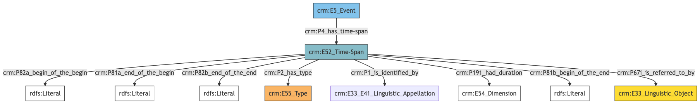

Collections
Author: Denitsa Nenova, George Bruseker
Version: 1.0
Collection Name
| Field ID |
Name |
Data Type |
Description |
CRM Path |
| LAF.4 |
Name Label |
String |
This field is used to record the string value of the machine readable label used for displaying the instance of name that is used to denote the documented entity. |
->p1->E33_41[4_1]->rdfs:label->rdf:literal |
| LAF.5 |
Name Type |
Concept |
This field is used to record the type of the name attributed to the documented entity. |
->p1->E33_41[4_1]->p2->E55[5_1] |
| LAF.6 |
Name Content |
String |
This field is used to record the string value of the name attributed to the documented entity. |
->p1->E33_E41[4_1]->p190->rdf:literal |
| LAF.44 |
Name Source |
Reference Model [Textual Work] |
This field is used to link to a source text in which the name denoting the documented entity is used. |
->p1->E33_E41[4_1]->p67i->E33[44_1] |
- Collection Name Ontology Graph
- Collection Name RDF
@prefix crm: <http://www.cidoc-crm.org/cidoc-crm/> .
@prefix rdfs: <http://www.w3.org/2000/01/rdf-schema#> .
<https://pma.us/models/person/E1> a crm:E1_CRM_Entity ;
crm:P1_is_identified_by <https://linked.art/example/conceptual_object/4_1> .
<http://vocab.getty.edu/page/aat/300404670> a crm:E55_Type ;
rdfs:label "preferred terms" .
<https://linked.art/example/conceptual_object/4_1> a crm:E33_E41_Linguistic_Appellation ;
rdfs:label "Name_label_value" ;
crm:P190_has_symbolic_content "Name_string_value" ;
crm:P2_has_type <http://vocab.getty.edu/page/aat/300404670> ;
crm:P67i_is_referred_to_by <https://linked.art/example/textual_object/44_1> ;
rdfs:comment "LAF.4_name_label" .
<https://linked.art/example/textual_object/44_1> a crm:E33_Linguistic_Object .
- Collection Name JSON-LD
{
"@context": "https://linked.art/ns/v1/linked-art.json",
"@graph": [
{
"_label": "preferred terms",
"id": "http://vocab.getty.edu/page/aat/300404670",
"type": "Type"
},
{
"id": "https://linked.art/example/textual_object/44_1",
"type": "LinguisticObject"
},
{
"id": "https://pma.us/models/person/E1",
"identified_by": [
"https://linked.art/example/conceptual_object/4_1"
],
"type": "CRMEntity"
},
{
"_label": "Name_label_value",
"classified_as": [
"http://vocab.getty.edu/page/aat/300404670"
],
"content": "Name_string_value",
"id": "https://linked.art/example/conceptual_object/4_1",
"rdfs:comment": "LAF.4_name_label",
"referred_to_by": [
"https://linked.art/example/textual_object/44_1"
],
"type": "Name"
}
]
}
Collection Identifier
| Field ID |
Name |
Data Type |
Description |
CRM Path |
| LAF.8 |
Identifier Label |
String |
This field is used to record the string value of the machine readable label used for displaying the instance of identifier that is used to denote the documented entity. |
->p1->E42[8_1]->rdfs:label->rdf:literal |
| LAF.9 |
Identifier Type |
Concept |
This field is used to record the type of the identifier attributed to the documented entity. |
->p1->E42[8_1]->p2->E55[9_1] |
| LAF.10 |
Identifier Content |
String |
This field is used to record an identifier attributed to the documented entity. |
->p1->E42[8_1]->p190->rdf:literal |
| LAF.45 |
Identifier Source |
Reference Model [Textual Work] |
This field is used to link to a source text in which the identifier denoting the documented entity is used. |
->p1->E42[8_1]->p67i->E33[45_1] |
- Collection Identifier Ontology Graph
- Collection Identifier RDF
@prefix crm: <http://www.cidoc-crm.org/cidoc-crm/> .
@prefix rdfs: <http://www.w3.org/2000/01/rdf-schema#> .
<https://pma.us/models/person/E1> a crm:E1_CRM_Entity ;
crm:P1_is_identified_by <https://linked.art/example/conceptual_object/8_1> .
<https://linked.art/example/conceptual_object/8_1> a crm:E42_Identifier ;
rdfs:label "Identifier_label_value" ;
crm:P190_has_symbolic_content "Identifier_value_content" ;
crm:P2_has_type <https://linked.art/example/identifier/9_1> ;
crm:P67i_is_referred_to_by <https://linked.art/example/textual_object/45_1> .
<https://linked.art/example/identifier/9_1> a crm:E55_Type .
<https://linked.art/example/textual_object/45_1> a crm:E33_Linguistic_Object .
- Collection Identifier JSON-LD
{
"@context": "https://linked.art/ns/v1/linked-art.json",
"@graph": [
{
"id": "https://linked.art/example/textual_object/45_1",
"type": "LinguisticObject"
},
{
"_label": "Identifier_label_value",
"classified_as": [
"https://linked.art/example/identifier/9_1"
],
"content": "Identifier_value_content",
"id": "https://linked.art/example/conceptual_object/8_1",
"referred_to_by": [
"https://linked.art/example/textual_object/45_1"
],
"type": "Identifier"
},
{
"id": "https://linked.art/example/identifier/9_1",
"type": "Type"
},
{
"id": "https://pma.us/models/person/E1",
"identified_by": [
"https://linked.art/example/conceptual_object/8_1"
],
"type": "CRMEntity"
}
]
}
Collection Statement
| Field ID |
Name |
Data Type |
Description |
CRM Path |
| LAF.13 |
Statement Label |
String |
This field is used to record the string value of the machine readable label used for displaying the instance of statement that describes the documented entity. |
->p67i->E33[13_1]->rdfs:label->rdf:literal |
| LAF.14 |
Statement Type |
Concept |
This field is used to record the formal type of the statement made about the documented entity. |
->p67i->E33[13_1]->p2->E55[14_1] |
| LAF.15 |
Statement Content |
String |
This field is used to record the actual textual content of the statement describing the documented entity. |
->p67i->E33[13_1]->p190->rdf:literal |
| LAF.16 |
Statement Language |
Concept |
This field is used to record the language of the statement describing the documented entity. |
->p67i->E33[13_1]->p72->E56[16_1] |
| LAF.50 |
Statement Name |
Collection [Name] |
This field is used to link to a name attributed to the statement made about the documented entity. |
->p67i->E33[13_1]->p1->E33_E41[50_1] |
| LAF.55 |
Statement Source |
Reference Model [Textual Work] |
This field is used to link to a source text from which the statement describing the documented entity is derived. |
->p67i->E33[13_1]->p67i->E33[55_1] |
- Collection Statement Ontology Graph
- Collection Statement RDF
@prefix crm: <http://www.cidoc-crm.org/cidoc-crm/> .
@prefix rdfs: <http://www.w3.org/2000/01/rdf-schema#> .
<https://pma.us/models/person/E1> a crm:E1_CRM_Entity ;
crm:P67i_is_referred_to_by <https://linked.art/example/conceptual_object/13_1> .
<http://vocab.getty.edu/aat/300418049> a crm:E55_Type .
<https://linked.art/example/conceptual_object/13_1> a crm:E33_Linguistic_Object ;
rdfs:label "Statement_label_value" ;
crm:P190_has_symbolic_content "Statement_string_content" ;
crm:P1_is_identified_by <https://linked.art/example/name/50_1> ;
crm:P2_has_type <https://linked.art/example/type/14_1> ;
crm:P67i_is_referred_to_by <https://linked.art/example/statement/55_1> ;
crm:P72_has_language <https://linked.art/example/type/16_1> .
<https://linked.art/example/name/50_1> a crm:E33_E41_Linguistic_Appellation .
<https://linked.art/example/statement/55_1> a crm:E33_Linguistic_Object .
<https://linked.art/example/type/14_1> a crm:E55_Type ;
crm:P2_has_type <http://vocab.getty.edu/aat/300418049> .
<https://linked.art/example/type/16_1> a crm:E56_Language .
- Collection Statement JSON-LD
{
"@context": "https://linked.art/ns/v1/linked-art.json",
"@graph": [
{
"_label": "Statement_label_value",
"classified_as": [
"https://linked.art/example/type/14_1"
],
"content": "Statement_string_content",
"id": "https://linked.art/example/conceptual_object/13_1",
"identified_by": [
"https://linked.art/example/name/50_1"
],
"language": [
"https://linked.art/example/type/16_1"
],
"referred_to_by": [
"https://linked.art/example/statement/55_1"
],
"type": "LinguisticObject"
},
{
"id": "https://pma.us/models/person/E1",
"referred_to_by": [
"https://linked.art/example/conceptual_object/13_1"
],
"type": "CRMEntity"
},
{
"classified_as": [
"http://vocab.getty.edu/aat/300418049"
],
"id": "https://linked.art/example/type/14_1",
"type": "Type"
},
{
"id": "https://linked.art/example/statement/55_1",
"type": "LinguisticObject"
},
{
"id": "http://vocab.getty.edu/aat/300418049",
"type": "Type"
},
{
"id": "https://linked.art/example/name/50_1",
"type": "Name"
},
{
"id": "https://linked.art/example/type/16_1",
"type": "Language"
}
]
}
Collection Timespan
| Field ID |
Name |
Data Type |
Description |
CRM Path |
| LAF.22 |
Timespan Duration |
Concept |
This field is used to link an instance of timespan with an instance of dimension which describes the temporal duration of the timespan of the documented event. |
->p4->E52[22_1]->p191->E54[22_2] |
| LAF.23 |
Timespan End of the Begin |
Date |
This field is used to record the latest possible start date for the timespan of the documented event. |
->p4->E52[22_1]->p81a->xsl:date |
| LAF.24 |
Timespan Begin of the End |
Date |
This field is used to record the earliest possible end date for the timespan of the documented event. |
->p4->E52[22_1]->p81b->xsl:date |
| LAF.25 |
Timespan Begin of the Begin |
Date |
This field is used to record the earliest possible start date for the timespan of the documented event. |
->p4->E52[22_1]->p82a->xsl:date |
| LAF.26 |
Timespan End of the End |
Date |
This field is used to record the latest possible end date for the timespan of the documented event. |
->p4->E52[22_1]->p82b->xsl:date |
| LAF.46 |
Timespan Label |
String |
This field is used to record the string value of the machine readable label used for displaying the instance of timespan of the documented event. |
->p4->E52[22_1]->rdfs:label->rdf:literal |
| LAF.47 |
Timespan Statement |
Collection [Statement] |
This field is used to link to a statement which describes the timespan of the documented event. |
->p4->E52[22_1]->p67i->E33[47_1] |
| LAF.48 |
Timespan Type |
Concept |
This field is used to record the formal type of the timespan of the documented event. |
->p4->E52[22_1]->p2->E55[48_1] |
| LAF.49 |
Timespan Name |
Collection [Name] |
This field is used to link to a name attributed to the timespan of the documented event. |
->p4->E52[22_1]->p1->E33_E41[49_1] |
- Collection Timespan Ontology Graph

- Collection Timespan RDF
@prefix crm: <http://www.cidoc-crm.org/cidoc-crm/> .
@prefix rdfs: <http://www.w3.org/2000/01/rdf-schema#> .
<https://pma.us/models/person/E5> a crm:E5_Event ;
crm:P4_has_time-span <https://linked.art/example/time_span/22_1> .
<https://linked.art/example/conceptual_object/47_1> a crm:E33_Linguistic_Object .
<https://linked.art/example/conceptual_object/49_1> a crm:E33_E41_Linguistic_Appellation .
<https://linked.art/example/time_span/22_1> a crm:E52_Time-Span ;
rdfs:label "timespan_label_value" ;
crm:P191_had_duration <https://linked.art/example/time_span/22_2> ;
crm:P1_is_identified_by <https://linked.art/example/conceptual_object/49_1> ;
crm:P2_has_type <https://linked.art/example/type/48_1> ;
crm:P67i_is_referred_to_by <https://linked.art/example/conceptual_object/47_1> ;
crm:P81a_end_of_the_begin "2000-01-01T09:00:00" ;
crm:P81b_begin_of_the_end "2000-01-01T09:00:00" ;
crm:P82a_begin_of_the_begin "2000-01-01T09:00:00" ;
crm:P82b_end_of_the_end "2000-01-01T09:00:00" .
<https://linked.art/example/time_span/22_2> a crm:E54_Dimension .
<https://linked.art/example/type/48_1> a crm:E55_Type .
- Collection Timespan JSON-LD
{
"@context": "https://linked.art/ns/v1/linked-art.json",
"@graph": [
{
"id": "https://linked.art/example/conceptual_object/49_1",
"type": "Name"
},
{
"_label": "timespan_label_value",
"classified_as": [
"https://linked.art/example/type/48_1"
],
"crm:P81a_end_of_the_begin": "2000-01-01T09:00:00",
"crm:P81b_begin_of_the_end": "2000-01-01T09:00:00",
"crm:P82a_begin_of_the_begin": "2000-01-01T09:00:00",
"crm:P82b_end_of_the_end": "2000-01-01T09:00:00",
"duration": "https://linked.art/example/time_span/22_2",
"id": "https://linked.art/example/time_span/22_1",
"identified_by": [
"https://linked.art/example/conceptual_object/49_1"
],
"referred_to_by": [
"https://linked.art/example/conceptual_object/47_1"
],
"type": "TimeSpan"
},
{
"id": "https://linked.art/example/time_span/22_2",
"type": "Dimension"
},
{
"id": "https://linked.art/example/conceptual_object/47_1",
"type": "LinguisticObject"
},
{
"id": "https://pma.us/models/person/E5",
"timespan": "https://linked.art/example/time_span/22_1",
"type": "Event"
},
{
"id": "https://linked.art/example/type/48_1",
"type": "Type"
}
]
}
Collection Creation
| Field ID |
Name |
Data Type |
Description |
CRM Path |
| LAF.71 |
Creation Location |
Reference Model [Place] |
This field is used to link the documented entity creation activity to a location at which it was carried out. |
->P94i->E65[71_1]->P7->E53[71_2] |
| LAF.84 |
Creation During |
Reference Model [Period] |
This field is used to link the documented entity creation activity to the period during which it occurred. |
->P94i->E65[71_1]->P117->E4[84_1] |
| LAF.85 |
Creation Source |
Reference Model [Textual Work] |
This field is used to link the documented entity creation activity to a textual source which documents the creation itself. |
->P94i->E65[71_1]->P67i->E33[85_1] |
| LAF.86 |
Creation Carried Out By |
Reference Model [Person/Group] |
This field is used to link the documented entity creation activity to an actor responsible for carrying it out. |
->P94i->E65[71_1]->P14->E39[86_1] |
| LAF.87 |
Creation Influence |
Reference Model [Artwork/Textual Work/Person/Group/Place/Period] |
This field is used to link the documented entity creation activity to any entity which had a substantial influence on that activity. |
->P94i->E65[71_1]->P15->E1[87_1] |
| LAF.88 |
Creation Name |
Collection [Name] |
This field is used to link the documented entity creation activity to a name that has been attributed to it. |
->P94i->E65[71_1]->P1->E33_E41[88_1] |
| LAF.89 |
Creation Used Object |
Concept |
This field is used to link the documented entity creation activity to an instance of physical object used in the exercise of this activity in a manner consequential to its outcome. |
->P94i->E65[71_1]->P16->E22[89_1] |
| LAF.90 |
Creation Time |
Collection [Timespan] |
This field is used to link the documented entity creation activity to an instance of time-span recording the temporal extent of the activity. |
->P94i->E65[71_1]->P4->E52[90_1] |
| LAF.91 |
Creation Type |
Concept |
This field is used to record the formal type of the documented entity creation activity. |
->P94i->E65[71_1]->P2->E55[91_1] |
| LAF.92 |
Creation Label |
String |
This field is used to record the string value of the machine readable label used for the documented entity creation activity. |
->P94i->E65[71_1]->rdfs:label->rdf:literal |
| LAF.93 |
Creation Technique |
Concept |
This field is used to indicate a kind of technique used in the execution of the documented entity creation activity. |
->P94i->E65[71_1]->P32->E55[93_1] |
| LAF.94 |
Creation Identifier |
Collection [Identifier] |
This field is used to link the documented entity creation activity to an identifier that has been attributed to it. |
->P94i->E65[71_1]->P1->E42[94_1] |
| LAF.95 |
Creation Statement |
Collection [Statement] |
This field is used to link the documented entity creation activity to a statement that describes it. |
->P94i->E65[71_1]->P67i->E33[95_1] |
| LAF.96 |
Creation Caused By |
Concept |
This field is used to link the documented entity creation activity to another event which was the causal reason behind its coming to be. |
->P94i->E65[71_1]->O13i->E5[96_1] |
- Collection Creation Ontology Graph

- Collection Creation RDF
@prefix crm: <http://www.cidoc-crm.org/cidoc-crm/> .
@prefix rdfs: <http://www.w3.org/2000/01/rdf-schema#> .
<https://pma.us/models/person/E89> a crm:E89_Propositional_Object ;
crm:P94i_was_created_by <https://linked.art/example/event/71_1> .
<https://linked.art/example/actor/86_1> a crm:E39_Actor .
<https://linked.art/example/conceptual_object/85_1> a crm:E33_Linguistic_Object .
<https://linked.art/example/conceptual_object/95_1> a crm:E33_Linguistic_Object .
<https://linked.art/example/event/71_1> a crm:E65_Creation ;
rdfs:label "Curation_label_value" ;
crm:O13i_is_trigerred_by <https://linked.art/example/event/96_1> ;
crm:P117_occurs_during <https://linked.art/example/event/84_1> ;
crm:P14_carried_out_by <https://linked.art/example/actor/86_1> ;
crm:P15_was_influenced_by <https://linked.art/example/thing/87_1> ;
crm:P16_used_specific_object <https://linked.art/example/physical_object/89_1> ;
crm:P1_is_identified_by <https://linked.art/example/identifier/94_1>,
<https://linked.art/example/name/88_1> ;
crm:P2_has_type <https://linked.art/example/type/91_1> ;
crm:P32_used_general_technique <https://linked.art/example/type/93_1> ;
crm:P4_has_time-span <https://linked.art/example/time_span/90_1> ;
crm:P67i_is_referred_to_by <https://linked.art/example/conceptual_object/85_1>,
<https://linked.art/example/conceptual_object/95_1> ;
crm:P7_took_place_at <https://linked.art/example/place/71_2> .
<https://linked.art/example/event/84_1> a crm:E4_Period .
<https://linked.art/example/event/96_1> a crm:E5_Event .
<https://linked.art/example/identifier/94_1> a crm:E42_Identifier .
<https://linked.art/example/name/88_1> a crm:E33_E41_Linguistic_Appellation .
<https://linked.art/example/physical_object/89_1> a crm:E22_Human-Made_Object .
<https://linked.art/example/place/71_2> a crm:E53_Place .
<https://linked.art/example/thing/87_1> a crm:E1_CRM_Entity .
<https://linked.art/example/time_span/90_1> a crm:E52_Time-Span .
<https://linked.art/example/type/91_1> a crm:E55_Type .
<https://linked.art/example/type/93_1> a crm:E55_Type .
- Collection Creation JSON-LD
{
"@context": "https://linked.art/ns/v1/linked-art.json",
"@graph": [
{
"id": "https://linked.art/example/type/91_1",
"type": "Type"
},
{
"id": "https://linked.art/example/event/96_1",
"type": "Event"
},
{
"id": "https://linked.art/example/conceptual_object/85_1",
"type": "LinguisticObject"
},
{
"id": "https://linked.art/example/time_span/90_1",
"type": "TimeSpan"
},
{
"id": "https://linked.art/example/event/84_1",
"type": "Period"
},
{
"id": "https://linked.art/example/thing/87_1",
"type": "CRMEntity"
},
{
"_label": "Curation_label_value",
"carried_out_by": [
"https://linked.art/example/actor/86_1"
],
"classified_as": [
"https://linked.art/example/type/91_1"
],
"crm:O13i_is_trigerred_by": {
"id": "https://linked.art/example/event/96_1"
},
"crm:P117_occurs_during": {
"id": "https://linked.art/example/event/84_1"
},
"id": "https://linked.art/example/event/71_1",
"identified_by": [
"https://linked.art/example/name/88_1",
"https://linked.art/example/identifier/94_1"
],
"influenced_by": [
"https://linked.art/example/thing/87_1"
],
"referred_to_by": [
"https://linked.art/example/conceptual_object/95_1",
"https://linked.art/example/conceptual_object/85_1"
],
"technique": [
"https://linked.art/example/type/93_1"
],
"timespan": "https://linked.art/example/time_span/90_1",
"took_place_at": [
"https://linked.art/example/place/71_2"
],
"type": "Creation",
"used_specific_object": [
"https://linked.art/example/physical_object/89_1"
]
},
{
"id": "https://linked.art/example/physical_object/89_1",
"type": "HumanMadeObject"
},
{
"id": "https://linked.art/example/conceptual_object/95_1",
"type": "LinguisticObject"
},
{
"created_by": "https://linked.art/example/event/71_1",
"id": "https://pma.us/models/person/E89",
"type": "PropositionalObject"
},
{
"id": "https://linked.art/example/type/93_1",
"type": "Type"
},
{
"id": "https://linked.art/example/actor/86_1",
"type": "Actor"
},
{
"id": "https://linked.art/example/place/71_2",
"type": "Place"
},
{
"id": "https://linked.art/example/identifier/94_1",
"type": "Identifier"
},
{
"id": "https://linked.art/example/name/88_1",
"type": "Name"
}
]
}
Collection Data Assignment
| Field ID |
Name |
Data Type |
Description |
CRM Path |
| LAF.429 |
Data Assigner |
Reference Model [Person/Group] |
This field is used to indicate the actor responsible for the event of data assignment. |
->p140i->E13[429_1]->P14->E39[429_2] |
| LAF.430 |
Type of Data Assignment |
Concept |
This field is used to indicate the type of the event of data assignment. |
->p140i->E13[429_1]->P2->E55[430_1] |
| LAF.431 |
Data Assignment Label |
String |
This field is used to indicate the machine readable label for the event of data assignment. |
->p140i->E13[429_1]->rdfs:label->rdf:literal |
| LAF.432 |
Name of Data Assignment |
Collection [Name] |
This field is used to indicate the name given to the event of data assignment. |
->p140i->E13[429_1]->p1->E41[432_1] |
| LAF.552 |
Statement about Data Assignment |
Collection [Statement] |
This field is used to document free text statements about the event of data assignment. |
->p140i->E13[429_1]->p67i->E33[552_1] |
- Collection Data Assignment Ontology Graph
- Collection Data Assignment RDF
@prefix crm: <http://www.cidoc-crm.org/cidoc-crm/> .
@prefix rdfs: <http://www.w3.org/2000/01/rdf-schema#> .
<https://pma.us/models/person/E1> a crm:E1_CRM_Entity ;
crm:P141i_was_assigned_by <https://linked.art/example/event/429_1> .
<https://linked.art/example/actor/430_1> a crm:E39_Actor .
<https://linked.art/example/conceptual_object/552_1> a crm:E33_Linguistic_Object .
<https://linked.art/example/event/429_1> a crm:E13_Attribute_Assignment ;
rdfs:label "Value here" ;
crm:P14_carried_out_by <https://linked.art/example/actor/430_1> ;
crm:P1_is_identified_by <https://linked.art/example/name/432_1> ;
crm:P2_has_type <https://linked.art/example/type/431_1> ;
crm:P67i_is_referred_to_by <https://linked.art/example/conceptual_object/552_1> .
<https://linked.art/example/name/432_1> a crm:E41_Appellation .
<https://linked.art/example/type/431_1> a crm:E55_Type .
- Collection Data Assignment JSON-LD
{
"@context": "https://linked.art/ns/v1/linked-art.json",
"@graph": [
{
"assigned_by": [
"https://linked.art/example/event/429_1"
],
"id": "https://pma.us/models/person/E1",
"type": "CRMEntity"
},
{
"id": "https://linked.art/example/conceptual_object/552_1",
"type": "LinguisticObject"
},
{
"id": "https://linked.art/example/type/431_1",
"type": "Type"
},
{
"id": "https://linked.art/example/name/432_1",
"type": "Appellation"
},
{
"_label": "Value here",
"carried_out_by": [
"https://linked.art/example/actor/430_1"
],
"classified_as": [
"https://linked.art/example/type/431_1"
],
"id": "https://linked.art/example/event/429_1",
"identified_by": [
"https://linked.art/example/name/432_1"
],
"referred_to_by": [
"https://linked.art/example/conceptual_object/552_1"
],
"type": "AttributeAssignment"
},
{
"id": "https://linked.art/example/actor/430_1",
"type": "Actor"
}
]
}